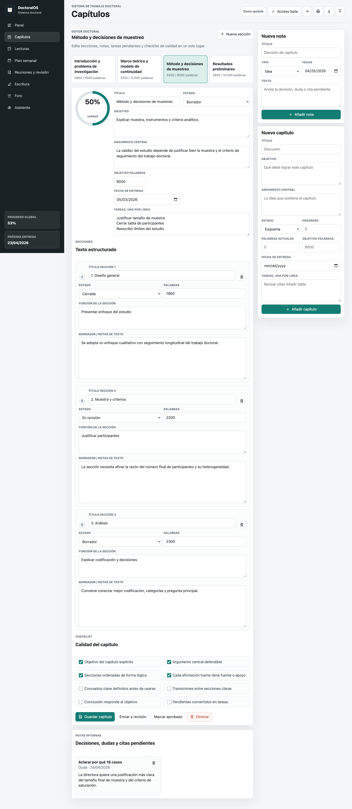
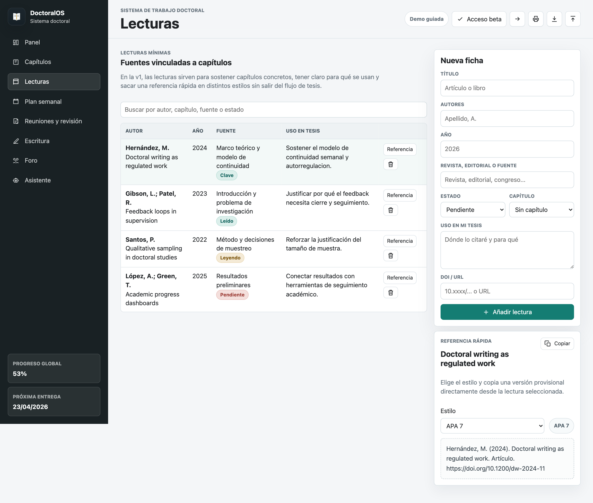
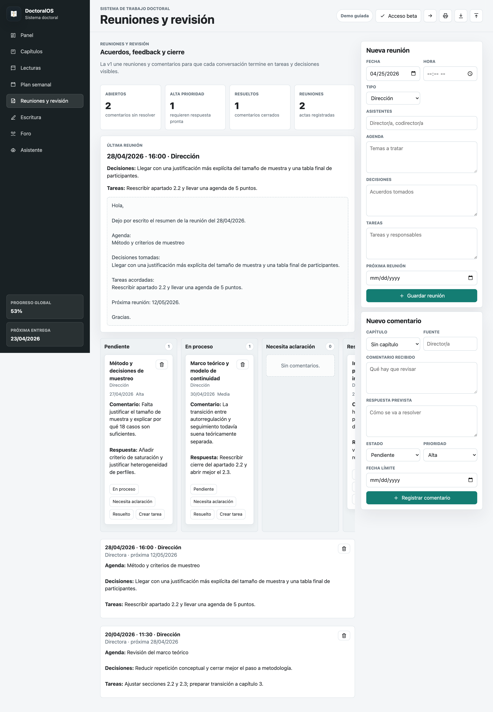

Privado
Workspace real separado de la demo La tesis de verdad vive detrás de cuenta, sesión y beta cerrada.Beta cerrada para doctorandos individuales en fase real de tesis
El sistema de trabajo para terminar la tesis con claridad semanal
DoctoralOS reúne capítulos, prioridades, reuniones, comentarios y escritura en un mismo espacio. No intenta ser una suite académica infinita: intenta que cada semana sepas qué cerrar y por qué.
Cuenta privada y sincronizada
Respaldo exportable
Beta cerrada con acceso controlado
Controlado
Acceso por invitación y revisión previa No hay registro libre: el acceso nuevo se valida antes de entrar.Discreto
Sin indexación abierta en buscadores La capa pública se comparte por enlace directo, no como escaparate indexado.Ya tienes cuenta: entra directamente en tu workspace.
Acceso controlado
La beta no está abierta al registro libre
Se entra por invitación o revisión previa para mantener foco, feedback útil y un entorno más cuidado.
Exposición limitada
La parte pública no está pensada para indexarse como catálogo
DoctoralOS se comparte por enlace directo y demo guiada, no como una web abierta a rastreo indiscriminado.
Confianza operativa
Cuenta privada, sincronización y respaldo
DoctoralOS trabaja con acceso privado, guardado persistente y exportación del estado de la tesis.
Qué es DoctoralOS
Una app hecha para sostener el trabajo doctoral, no para distraerlo
La v1 se centra en el núcleo del trabajo individual: escribir por capítulos, decidir la semana, registrar reuniones y cerrar comentarios con continuidad.
Capítulos con estructura
Editor con secciones, notas internas, objetivos y checklist para que cada capítulo avance con criterio.
Plan semanal real
Tareas pequeñas con fecha, impacto y esfuerzo razonable para mover la tesis sin dispersarte.
Reuniones y revisión
Agenda, decisiones, tareas derivadas y comentarios del director en una misma vista.
Escritura visible
Sesiones, palabras y ritmo semanal para que el progreso no dependa de sensaciones.
TeDoc dentro del flujo
Resume estado, prioriza y crea acciones sin obligarte a salir de la app.
Cuenta y respaldo
Sincronización, guardado y exportación del estado completo de la tesis.
Encaje
Para quién encaja bien y para quién no
Cuanto más claro tengamos el problema que resuelve, más fácil es que el producto se vea serio y útil desde el principio.
Encaja si
Tu tesis ya existe, pero tu sistema de trabajo no
- Tienes capítulos, notas y documentos repartidos
- Las reuniones generan feedback difícil de cerrar
- Te cuesta decidir qué hacer cada semana
- Quieres continuidad sin cambiar todas tus herramientas
Todavía no encaja si
Buscas otra categoría de producto
- Necesitas una suite para equipos o universidades
- Quieres un gestor bibliográfico completo
- Esperas que la IA redacte la tesis por ti
- Necesitas permisos complejos de director, grupo o institución
Demo guiada
Una tesis de ejemplo para ver el producto en contexto
No hace falta imaginarlo. La demo abre un caso completo con capítulos, reuniones, tareas, comentarios y TeDoc ya en funcionamiento.
Tesis de ejemplo
Plataformas digitales y continuidad en la tesis doctoral
La demo está pensada para enseñar el valor de DoctoralOS en una tesis que ya está en escritura y revisión.
- 4 capítulos con progreso y fechas
- Plan semanal con prioridades ya abiertas
- Reunión con directora y comentarios pendientes
- Bitácora de escritura reciente
Qué mirar primero
Recorrido recomendado
- Panel: para ver foco, progreso y siguiente entrega
- Capítulos: para entender el editor y la lógica del checklist
- Reuniones y revisión: para ver cómo se cierra feedback
- TeDoc: para pedir consejo y crear acciones desde lenguaje natural
Cómo funciona
Un recorrido visual de cómo DoctoralOS sostiene una semana real de tesis
DoctoralOS no está pensado para “explorar módulos”, sino para ayudarte a pasar de una tesis dispersa a un flujo semanal con foco, decisiones y cierre.
Panel, capítulos y métricas para leer el estado real de la tesis en minutos.
Plan semanal, lecturas y comentarios convertidos en trabajo pequeño y concreto.
Reuniones, escritura y TeDoc para que cada semana deje avance visible, no solo actividad.
Panel
Empieza por el foco, no por el ruido
El panel resume lo que importa ahora: siguiente entrega, ritmo de escritura, capítulos activos, tareas vencidas y dónde se está bloqueando la tesis.
Qué resuelve
Saber por dónde empezar cada semana
Capítulos
Escribe dentro de una estructura que ya piensa por ti

Cada capítulo tiene objetivo, argumento, secciones, checklist de calidad y notas. Así la escritura deja de ser una pila de borradores dispersos.
Qué resuelve
Convertir un borrador grande en trabajo cerrable
Lecturas
No guardes artículos: conecta fuentes con decisiones

La sección de lecturas vincula cada fuente a un capítulo, aclara para qué la usas y ahora genera referencias rápidas en varios estilos.
Qué resuelve
Leer con intención y citar sin fricción
Plan semanal
La semana se mueve con tareas cerrables y checklist real
Planifica pocas tareas, márcalas conforme las terminas y deja visible qué está abierto, qué puede esperar y qué ya has cerrado.
Qué resuelve
Separar trabajo real de ruido pendiente
Reuniones y revisión
Convierte cada reunión en decisiones y cierre

Aquí viven la agenda, las decisiones, las tareas derivadas y los comentarios del director. El objetivo es que el feedback termine en acciones, no en ansiedad.
Qué resuelve
Hacer accionable el feedback doctoral
TeDoc
Pide consejo o ejecuta acciones sin salir del sistema
TeDoc resume progreso, prioriza la semana y crea tareas, reuniones, notas o comentarios a partir de lenguaje natural.
Qué resuelve
Tomar decisiones con menos carga mental
Precios
Un acceso fundador simple mientras afinamos la v1 con doctorandos reales
Un solo plan, una sola promesa y una sola cuenta por tesis. El acceso real se está abriendo en beta cerrada para poder afinar la v1 con feedback útil y controlado.
Acceso fundador
9 EUR / mes
Capítulos, plan semanal, reuniones, comentarios, escritura, lecturas básicas, TeDoc, cuenta, sincronización y respaldo exportable.
Incluye
- Editor real de capítulos
- Tablero semanal
- Reuniones y comentarios
- Bitácora de escritura
- Cuenta y sincronización
Pensado para
- Doctorandos individuales
- Tesis en fase de escritura o revisión
- Quien necesita continuidad semanal
- Quien está cansado del caos de herramientas sueltas
No promete todavía
- Planes institucionales o de equipo
- Bibliografía avanzada tipo ecosistema completo
- Exportación Word o LaTeX avanzada
- Roles complejos de director o universidad
Cómo entrar en la beta
Un acceso más cuidado para una tesis que ya está en juego
La beta cerrada sirve para revisar mejor la experiencia, mantener el producto estable y trabajar con menos ruido mientras seguimos afinando la v1.
Exploras la demo
Ves el panel, los capítulos, la revisión y TeDoc dentro de una tesis de ejemplo.
Solicitas acceso
Nos escribes con tu caso o recibes un código de invitación para activar la cuenta.
Trabajas en privado
Tu tesis real vive en un workspace privado con sincronización y respaldo exportable.
Preguntas frecuentes
Lo importante antes de entrar
Qué problema resuelve exactamente
Convierte una tesis dispersa en un sistema semanal con capítulos, prioridades, reuniones, comentarios y escritura conectados.
Sirve si ya uso Google Docs o Notion
Sí. DoctoralOS no intenta sustituir todos tus documentos; ordena el proceso y el seguimiento alrededor de la tesis.
Mis datos son míos
Sí. Puedes exportar un respaldo completo y la parte pública ya deja visibles privacidad, términos y seguridad.
Necesita IA para ser útil
No. La promesa principal es organización y continuidad. TeDoc es una capa adicional, no el argumento central de compra.
Cómo funciona el acceso a la beta
Puedes explorar la demo guiada libremente. Para trabajar con tu tesis real, el acceso nuevo se está dando de forma controlada por invitación o validación previa.
Sirve para mi director o mi grupo
No en esta fase. Esta versión está pensada para el doctorando individual que necesita ordenar su propio trabajo.
Contacto
Si quieres entrar en la beta o darnos feedback, escríbenos
DoctoralOS está en fase de beta cerrada con doctorandos individuales. Si quieres probarlo con tu tesis real o contarnos tu caso, estamos escuchando.
Email: mario.martinez.cgr@gmail.com